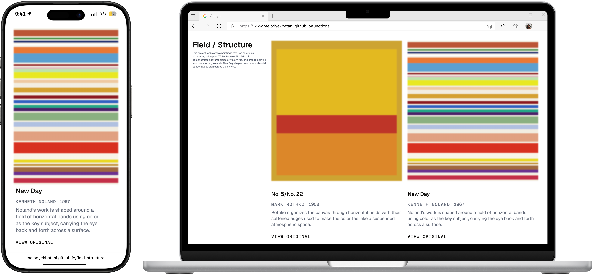
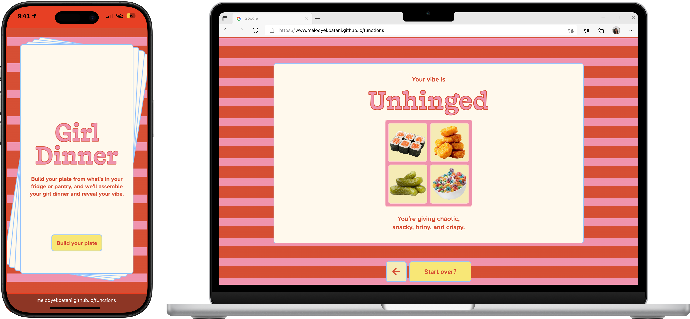
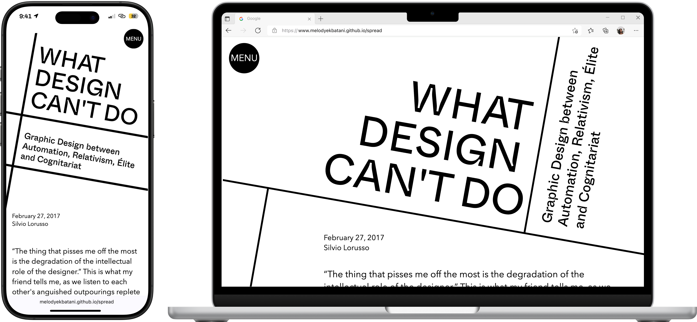
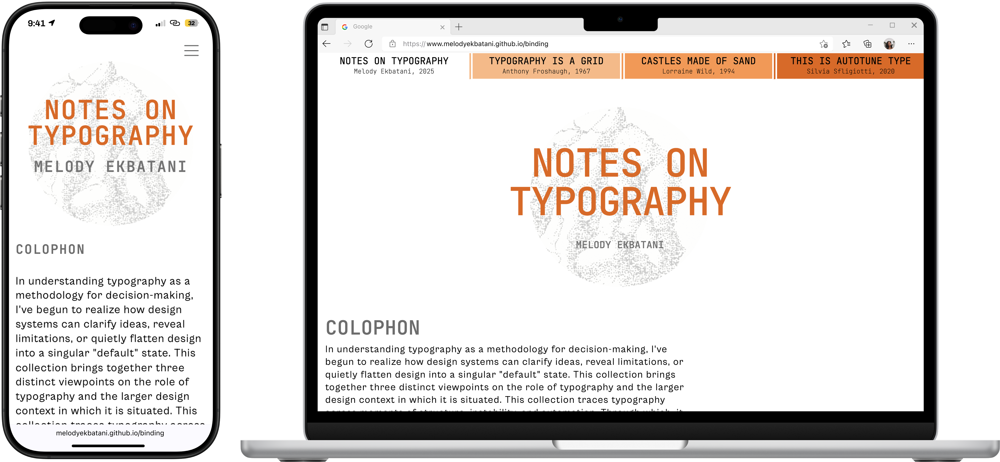

Made for Shopify
Melody Ekbatani
My practice centers on elevating product experiences through craft, clarity, and systems thinking. I am classically trained as an architect, bringing a multidisciplinary and structured approach to my work.
I recently completed my Master's in Digital Product Design at Parsons, where I deepened my skills in UX/UI, front-end development, and designing with AI tools. My perspective is also shaped a culture of hospitality and the way I practice creativity outside of work.
Designs
Explorations
Recent experiments I’m building in code.

R&B archive
An interactive R&B archive that uses the Are.na API to turn a curated music collection into a responsive CD player interface.

Reinterpreting artwork
Hand-coded project reinterpreting two abstract artworks using HTML, CSS, and JavaScript.

Girl dinner generator
A playful meal generator that turns fridge ingredients into a personalized “girl dinner” plate and personality reading.

Pair programming
A collaborative HTML/CSS reading experience that transforms long-form text through shifting grids and expressive typography.

Foundations
Building the fundamentals of front-end development and exploring themes of typography and grid design.
My work is focused on delivering product experiences that feel clear and considered, bringing entrepreneurship, creativity, and innovation to the table. What draws me to Shopify is the chance to design for real people building real businesses.
I’m inspired by that entrepreneurial journey, and I want to help create tools that empower people to build with more clarity and confidence. This past year, I attended the Sandy Jeong Shopify x Parsons panel, and I really connected with how she spoke about Shopify’s role in championing the merchant-to-consumer relationship. Along with other Shopify talks and design team content, it reinforced how aligned I am with the mission of making commerce better for everyone.
I would be grateful for the opportunity to learn from the team, contribute to real product work, and build closer to how thoughtful products ship.
Many thanks!
Melody